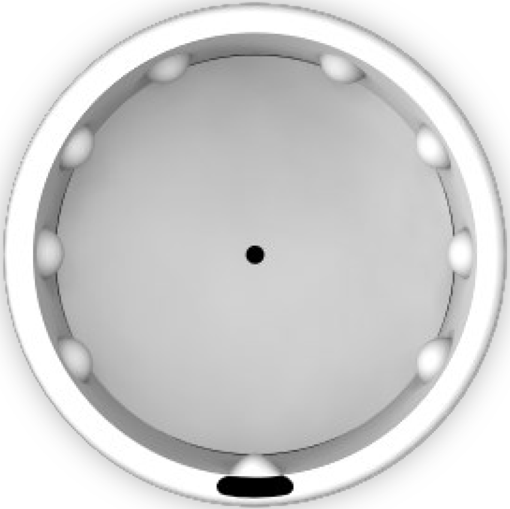
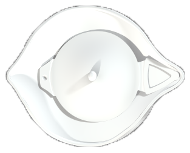
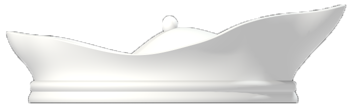
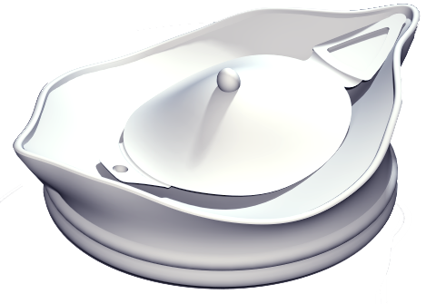
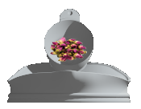
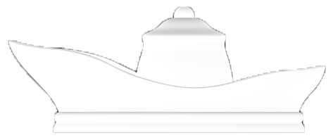
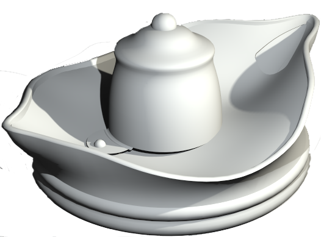

Lids
We designed our lids to offer a unique and fluid drinking experience. The beauty and distinctiveness of the crafted lids reflect the customizable tasting feel of sipping one of Froot’s many flavors or blends.
‘Pearl’ serves as the initial option for our customers. Without knowing how to customize the herb or fruit of their teas, customers can simply try one of our signature herbal teas. Six Braille markings on the sides of the lid indicate the type of tea, while the two center ones indicate sugar and milk. Instead of looking at the menu in the store, customers can easily choose a flavor that will bring them a refreshing tasting experience.
‘Pearl’ has a curvilinear drinking well that reflects the feminine and Zen quality of our product. In addition, it directs spill back into the cup without an effort. The average nose height is about 20mm, which ‘Pearl’ is designed to accommodate. When the lid is not in your way, you can fully appreciate the aroma and flavor of the Froot herbal teas. The natural dent of the lid also serves as the carrier for the condiments. Even for the most basic tea, we want our customers to have a customized experience.

‘T-back’ serves our on-the-go customer in a hurry with style and ease. The lid gracefully pulls back to reveal the drinking hole, and can effortlessly slip back to cover the opening while walking or not in use. The triangular opening, slightly larger in size than most to-go lids, enhances the amount of fragrance that reaches the nose, thereby elevating the tasting experience. Simultaneously, this wider opening helps prevent annoying lipstick buildup from sticking to the lid and disrupting the pleasurable tea taste.
‘T-back’ possesses the inherently pleasing shape of a classic teapot, while simultaneously performing the functional task of carrying one of Froot’s signature herbal infusions or another custom add-on. The curving shape of the lid’s center well also serves to smoothly collect spill back to the last drop. So even in a rush, no sip will be lost with ‘T-back’.


T-back: Tear-back Lid

'Spout' was designed to enhance the pleasurable experience of drinking our unique tea blends through its visual beauty and elegance. The curvilinear, spout-like shape of the lid contours mimics a teapot, creating an ergonomic form for smooth and easy sipping. The centerpiece of the lid, which also playfully mirrors a teapot, conveniently lifts up to hold one of Froot’s signature herbal infusions or another custom add-on. Simultaneously, this dome structure serves as a place to collect the used tea bag after seeping is complete if there is no trash can around.
Finally, the triangular sipping opening of ‘Spout’, larger than most standard to-go lids, allows for the rich aroma of the tea to better escape the cup. Since most of what we perceive as taste actually results from our sense of smell, this increased amount of fragrance reaching the nose enhances the tasting experience. Thus “Spout” elegantly brings together the senses of vision, smell, and taste into a unified, beautifully crafted whole.


Spout: Froot-signature Lid
